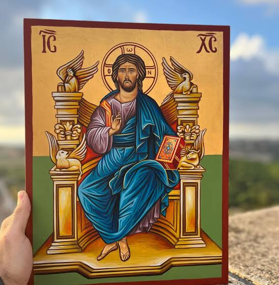
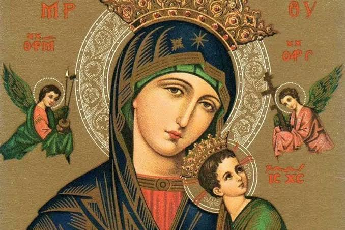
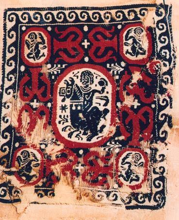
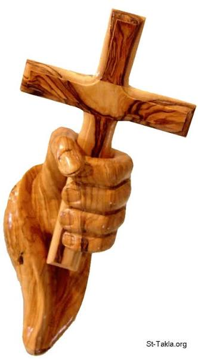
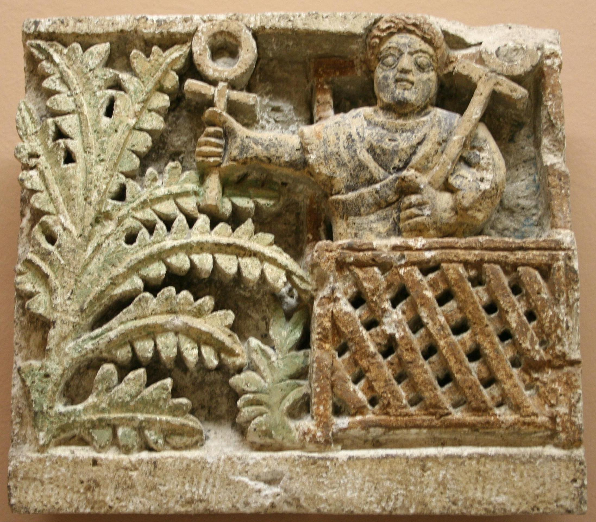
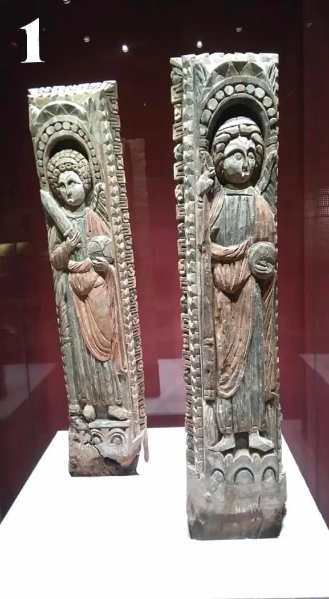

Discover a collection of important Coptic artifacts that reflect the spiritual and artistic heritage of ancient Egypt.

Icon of Christ Enthroned (Pantocrator) This Byzantine-style icon depicts Jesus Christ seated in majesty upon a celestial throne, flanked by the symbolic figures of the four Evangelists. Crafted with traditional iconography techniques, it features vibrant gold leaf accents representing divine light and rich blue robes symbolizing transcendence, making it a profound example of sacred liturgical art.

Icon of Christ Enthroned (Pantocrator) This Byzantine-style icon depicts Jesus Christ seated in majesty upon a celestial throne, flanked by the symbolic figures of the four Evangelists. Crafted with traditional iconography techniques, it features vibrant gold leaf accents representing divine light and rich blue robes symbolizing transcendence, making it a profound example of sacred liturgical art.

This is a rare piece of early Christian Egyptian weaving, featuring a central figure surrounded by medallions and intricate geometric borders. Handcrafted using the traditional tapestry technique, it showcases the distinctive red and black color palette and symbolic motifs typical of Coptic textile art from the 4th–7th centuries.

This artistic sculpture features a hand gripping a cross, meticulously carved from olive wood to showcase its natural grain and warm textures. It serves as a powerful symbol of faith and devotion, blending traditional craftsmanship with spiritual significance.

This limestone relief is a significant piece of Coptic art from Egypt, depicting a figure holding the Ankh symbol—ancient Egypt's symbol of life adopted by early Christians. The carving, featuring stylized botanical motifs and a lattice-work balcony, showcases the artistic transition and cultural fusion between Pharaonic heritage and early Christian iconography.

These ancient wooden pillars feature relief carvings of Archangels, likely Michael and Gabriel, portrayed within decorative niches. Such pieces were traditionally used as structural or ornamental elements in early Egyptian churches, showcasing the stylized features and symbolic craftsmanship unique to Coptic liturgical art.